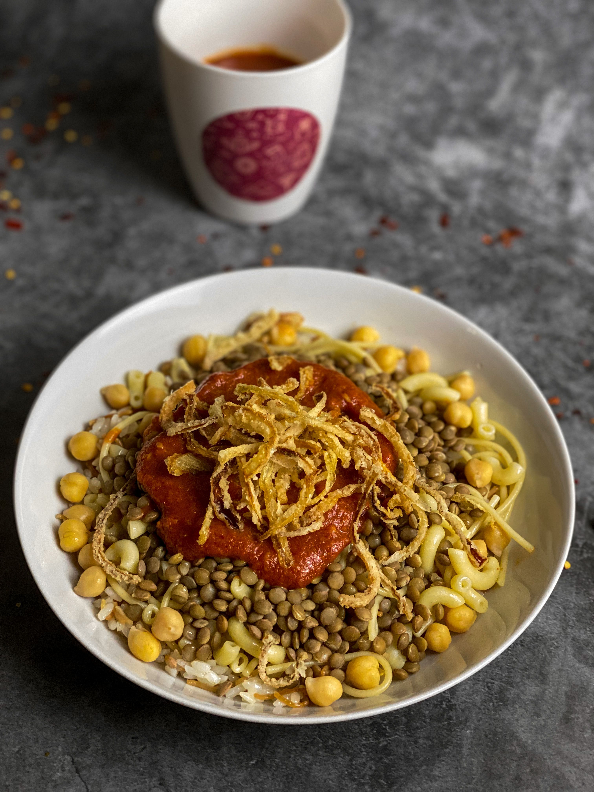

In the Egyptian Books of Genesis, the Ancient Egyptian term "Koshir" meant "Food of the rites of the Gods", Koshir was a breakfast dish that consisted of lentils, wheat, chickpeas, garlic and onions cooked together in clay pots. It has been claimed that the original account of the book goes back to Manetho. However, in the collected works of Manetho, no mention of Koshir could be found. A priest from Heliopolis described it as a food to eat after fasting on the 11th day of Pachons, a month in the ancient Egyptian calendar. Koshary is known as "The food of the Poor"; it consists of fried onions, lentils, rice, macaroni and a red sauce. It is somewhat related to Mediterranean cuisine, but the Egyptian dish has different ingredients and flavors, especially the local Egyptian lemon sauce, which gives it the unique taste for which the dish is popular.
In 1853, in his book "Journey to Egypt and the Hijaz", explorer Richard Burton documented koshary as the breakfast meal of the people of Suez. It consisted of Egyptian lentils, rice, butter, onions and pickled lemons. This account is thought to be the earliest known English-language written reference to koshary.
Koshary was sold on food carts in its early years, and was introduced to restaurants later.
This dish is widely popular among workers and laborers and the dish is well-suited to mass catering events such as conferences. It may be prepared at home, and is also served at roadside stalls and restaurants all over Egypt; some restaurants specialize in koshary to the exclusion of other dishes, while others feature it as one item among many. As traditionally prepared koshary does not contain any animal products, it can be considered vegan, as long as all frying uses vegetable oil.
In 2025, koshary was recognized as intangible cultural heritage by UNESCO.